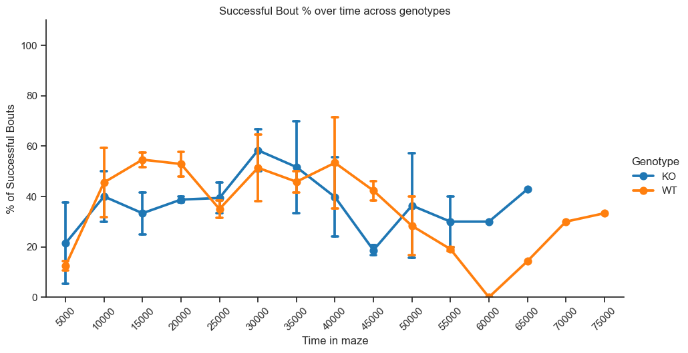
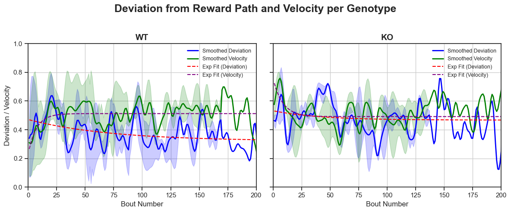

Table of Contents¶
- Load project
- Import Combined DLC CSV
- Create time-binned dictionary
- Exclusion Criteria
- Plot 1: Heatmap Representations
- Shannon's Entropy
- Proportion of Region-based usage across Time bins
- Bout-Level Success metrics
- Plot 7: Deviation from Reward Path and Velocity
Load project¶
from pathlib import Path
import pandas as pd
from compass_labyrinth import load_project
project_path = Path(".").resolve() / "my_project_2"
config, cohort_metadata = load_project(project_path=project_path)
config
{'bodyparts': ['nose',
'sternum',
'belly',
'tailbase',
'leftflank',
'rightflank'],
'creation_date_time': '2025-10-14T16:13:40.839920',
'dlc_scorer': 'DLC_resnet50_LabyrinthMar13shuffle1_1000000',
'experimental_groups': ['A', 'B', 'C', 'D'],
'file_ext': '.csv',
'palette': 'grey',
'project_name': 'my_project_2',
'project_path_full': '/Users/luiztauffer/Github/CoMPASS-Labyrinth/notebooks/my_project_2',
'session_names': ['Session-3',
'Session-4',
'Session-5',
'Session-6',
'Session-7'],
'trial_type': 'Labyrinth_DSI',
'video_type': '.mp4'}
| Session # | Run Date | Time Of Day | Rack Location | Computer | Noldus Chamber | Camera # | Noldus Trial | Noldus Project Name | DSI Trial | ... | Birth Date | Age (months) | Housing ID | Transmitter # | Exclude Trial | X1 | X2 | Y1 | Y2 | NOTES | |
|---|---|---|---|---|---|---|---|---|---|---|---|---|---|---|---|---|---|---|---|---|---|
| 0 | 3 | 2024-11-18T00:00:00 | 17:15:00 | BR | 1 | TR | 6 | 1 | 20241118_WT_DSI_Labyrinth_2 | 2 | ... | 2024-06-01T00:00:00 | 5m13d | H-11495-17 | 3,4 | NaN | 1486 | 2399 | 70 | 986 | Grabbed all pellets early on |
| 1 | 4 | 2024-11-18T00:00:00 | 17:15:00 | TR | 1 | BR | 2 | 1 | 20241118_WT_DSI_Labyrinth_2 | 2 | ... | 2024-06-02T00:00:00 | 5m12d | H-11497-17 | 5,6 | NaN | 1435 | 2359 | 1086 | 2015 | Light turned off; slightly dark |
| 2 | 5 | 2024-11-20T00:00:00 | 17:15:00 | BR | 1 | TR | 4 | 3 | 20241118_WT_DSI_Labyrinth_2 | 4 | ... | 2024-06-01T00:00:00 | 5m13d | H-11495-17 | 3,4 | NaN | 1486 | 2399 | 70 | 986 | Entered |
| 3 | 6 | 2024-12-02T00:00:00 | 17:15:00 | BR | 1 | TR | 4 | 5 | 20241118_WT_DSI_Labyrinth_2 | 6 | ... | 2024-06-02T00:00:00 | 5m12d | H-11497-17 | 3,4 | NaN | 1486 | 2399 | 70 | 986 | Entered |
| 4 | 7 | 2024-12-03T00:00:00 | 17:15:00 | BL | 1 | TL | 1 | 6 | 20241118_WT_DSI_Labyrinth_2 | 7 | ... | 2024-06-01T00:00:00 | 5m13d | H-11495-17 | 1,2 | NaN | 144 | 1075 | 19 | 954 | Entered |
5 rows × 26 columns
Import Combined DLC CSV¶
df_all_csv = pd.read_csv(project_path / "csvs" / "combined" / "Preprocessed_combined_file.csv")
df_all_csv
| x | y | Grid Number | likelihood | S_no | Region | Session | Genotype | Sex | NodeType | Velocity | |
|---|---|---|---|---|---|---|---|---|---|---|---|
| 0 | 275.057129 | 875.337219 | 47 | 0.983259 | 748 | entry_zone | 3 | WT | Female | Entry Nodes | 0.000000 |
| 1 | 271.037537 | 872.005432 | 47 | 0.989085 | 749 | entry_zone | 3 | WT | Female | Entry Nodes | 26.104563 |
| 2 | 267.526978 | 873.733704 | 47 | 0.986050 | 750 | entry_zone | 3 | WT | Female | Entry Nodes | 19.564603 |
| 3 | 265.571991 | 873.412659 | 47 | 0.953975 | 751 | entry_zone | 3 | WT | Female | Entry Nodes | 9.905860 |
| 4 | 266.325684 | 874.166748 | 47 | 0.958631 | 752 | entry_zone | 3 | WT | Female | Entry Nodes | 5.330815 |
| ... | ... | ... | ... | ... | ... | ... | ... | ... | ... | ... | ... |
| 265495 | 228.690262 | 814.897949 | 34 | 0.999385 | 225311 | reward_path | 7 | KO | Female | Non-Decision (Reward) | 293.221609 |
| 265496 | 292.517883 | 837.722717 | 46 | 0.999992 | 225312 | entry_zone | 7 | KO | Female | Entry Nodes | 338.929760 |
| 265497 | 295.305054 | 862.294739 | 47 | 0.999458 | 225313 | entry_zone | 7 | KO | Female | Entry Nodes | 123.647944 |
| 265498 | 295.361694 | 876.922546 | 47 | 0.999976 | 225314 | entry_zone | 7 | KO | Female | Entry Nodes | 73.139586 |
| 265499 | 294.444183 | 901.016602 | 47 | 0.962276 | 225315 | entry_zone | 7 | KO | Female | Entry Nodes | 120.557592 |
265500 rows × 11 columns
Create Time-Binned Dictionary¶
This workflow bins data from each session into defined intervals and calculates normalized region occupancy for each genotype. Each pivot table summarizes the proportion of time spent in each region across all sessions for a given bin.
Recommended Use:¶
- Ensure
df_all_csvcontains 'Session', 'Genotype', and 'Region' columns. - Set
LOWER_LIMITandUPPER_LIMITto define the full range of timepoints to analyze. - Set
BIN_SIZE(used asdifference) to determine the duration of each bin (e.g., 10000). - Provide
region_lengthsas a dictionary mapping region names to their total grid lengths. - The function returns a dictionary of pivot tables (one per genotype), useful for heatmap plotting.
Let's generate pivot tables for each genotype and time bin:
from compass_labyrinth.behavior.behavior_metrics.task_performance_analysis import generate_region_heatmap_pivots
pivot_dict = generate_region_heatmap_pivots(
df=df_all_csv,
lower_lim=0, # Start of time window
upper_lim=80000, # End of time window
difference=10000, # Bin width in timepoints
)
pivot_dict
{'WT': [Session 3 4 5 6 7
Region
dead_ends 0.026238 0.102472 0.049415 NaN NaN
entry_zone 0.27963 0.350917 0.283783 NaN NaN
loops 0.020899 0.096457 0.045463 NaN NaN
neutral_zone 0.017005 0.158748 0.065333 NaN NaN
reward_path 0.066233 0.151273 0.110471 NaN NaN
target_zone 0.589995 0.140132 0.445534 NaN NaN,
Session 3 4 5 6 7
Region
dead_ends 0.029137 0.045469 0.040759 NaN NaN
entry_zone 0.081512 0.122688 0.198544 NaN NaN
loops 0.029018 0.040293 0.039939 NaN NaN
neutral_zone 0.073554 0.03325 0.046698 NaN NaN
reward_path 0.097059 0.088841 0.141311 NaN NaN
target_zone 0.689719 0.669459 0.532749 NaN NaN,
Session 3 4 5 6 7
Region
dead_ends 0.07332 0.042224 0.025213 NaN NaN
entry_zone 0.18708 0.224646 0.125912 NaN NaN
loops 0.029001 0.033814 0.035429 NaN NaN
neutral_zone 0.062257 0.033544 0.088323 NaN NaN
reward_path 0.125924 0.130415 0.084648 NaN NaN
target_zone 0.522419 0.535356 0.640475 NaN NaN,
Session 3 4 5 6 7
Region
dead_ends 0.043817 NaN 0.048661 NaN NaN
entry_zone 0.109593 NaN 0.341505 NaN NaN
loops 0.033375 NaN 0.059773 NaN NaN
neutral_zone 0.037078 NaN 0.055517 NaN NaN
reward_path 0.161017 NaN 0.108825 NaN NaN
target_zone 0.61512 NaN 0.385719 NaN NaN,
Session 3 4 5 6 7
Region
dead_ends 0.051835 NaN 0.082675 NaN NaN
entry_zone 0.351637 NaN 0.313184 NaN NaN
loops 0.047363 NaN 0.086704 NaN NaN
neutral_zone 0.078946 NaN 0.101196 NaN NaN
reward_path 0.159491 NaN 0.174884 NaN NaN
target_zone 0.310728 NaN 0.241358 NaN NaN,
Session 3 4 5 6 7
Region
dead_ends 0.043033 NaN 0.05823 NaN NaN
entry_zone 0.530307 NaN 0.605594 NaN NaN
loops 0.078033 NaN 0.077525 NaN NaN
neutral_zone 0.066665 NaN 0.07914 NaN NaN
reward_path 0.167965 NaN 0.110694 NaN NaN
target_zone 0.113996 NaN 0.068817 NaN NaN,
Session 3 4 5 6 7
Region
dead_ends 0.043239 NaN NaN NaN NaN
entry_zone 0.270779 NaN NaN NaN NaN
loops 0.024505 NaN NaN NaN NaN
neutral_zone 0.022525 NaN NaN NaN NaN
reward_path 0.092019 NaN NaN NaN NaN
target_zone 0.546933 NaN NaN NaN NaN,
Session 3 4 5 6 7
Region
dead_ends 0.015728 NaN NaN NaN NaN
entry_zone 0.288438 NaN NaN NaN NaN
loops 0.0 NaN NaN NaN NaN
neutral_zone 0.0 NaN NaN NaN NaN
reward_path 0.065409 NaN NaN NaN NaN
target_zone 0.630425 NaN NaN NaN NaN],
'KO': [Session 3 4 5 6 7
Region
dead_ends NaN NaN NaN 0.045004 0.044383
entry_zone NaN NaN NaN 0.307047 0.319502
loops NaN NaN NaN 0.041874 0.061598
neutral_zone NaN NaN NaN 0.074687 0.052373
reward_path NaN NaN NaN 0.092255 0.103164
target_zone NaN NaN NaN 0.439133 0.418981,
Session 3 4 5 6 7
Region
dead_ends NaN NaN NaN 0.053663 0.041702
entry_zone NaN NaN NaN 0.281968 0.110074
loops NaN NaN NaN 0.02657 0.026993
neutral_zone NaN NaN NaN 0.057004 0.063573
reward_path NaN NaN NaN 0.096596 0.074752
target_zone NaN NaN NaN 0.484198 0.682905,
Session 3 4 5 6 7
Region
dead_ends NaN NaN NaN 0.05693 0.035876
entry_zone NaN NaN NaN 0.302763 0.145048
loops NaN NaN NaN 0.027042 0.024638
neutral_zone NaN NaN NaN 0.089156 0.043116
reward_path NaN NaN NaN 0.099508 0.080032
target_zone NaN NaN NaN 0.424601 0.671289,
Session 3 4 5 6 7
Region
dead_ends NaN NaN NaN 0.055025 0.066398
entry_zone NaN NaN NaN 0.39776 0.207308
loops NaN NaN NaN 0.033348 0.061158
neutral_zone NaN NaN NaN 0.048632 0.02619
reward_path NaN NaN NaN 0.092559 0.153013
target_zone NaN NaN NaN 0.372676 0.485933,
Session 3 4 5 6 7
Region
dead_ends NaN NaN NaN 0.07803 0.056418
entry_zone NaN NaN NaN 0.527229 0.111492
loops NaN NaN NaN 0.029762 0.059491
neutral_zone NaN NaN NaN 0.079348 0.027319
reward_path NaN NaN NaN 0.08669 0.160993
target_zone NaN NaN NaN 0.198941 0.584287,
Session 3 4 5 6 7
Region
dead_ends NaN NaN NaN 0.05972 0.055855
entry_zone NaN NaN NaN 0.443182 0.13774
loops NaN NaN NaN 0.053432 0.04803
neutral_zone NaN NaN NaN 0.099545 0.060367
reward_path NaN NaN NaN 0.091393 0.224139
target_zone NaN NaN NaN 0.252727 0.47387,
Session 3 4 5 6 7
Region
dead_ends NaN NaN NaN NaN 0.103525
entry_zone NaN NaN NaN NaN 0.168228
loops NaN NaN NaN NaN 0.095542
neutral_zone NaN NaN NaN NaN 0.084114
reward_path NaN NaN NaN NaN 0.170478
target_zone NaN NaN NaN NaN 0.378113]}
Exclusion Criteria¶
This workflow quantifies target zone engagement across bouts and sessions, plots the relationship between target usage and session duration, and interactively excludes low-performing sessions based on user-defined thresholds.
Recommended Use:¶
- Ensure
df_all_csvcontains 'Session', 'Genotype', 'Grid.Number', and 'Bout_Index' columns. - Run
compute_frames_per_session()to get the number of frames per session. - Use
compute_target_zone_usage()to calculate per-bout usage for a specified region; setregionanddifferenceaccordingly. - Summarize target usage at the session level using
summarize_target_usage()withmouseinfoto add sex/genotype metadata. - Visualize the relationship between number of frames and target usage using
plot_target_usage_vs_frames(). - Call
exclude_low_performing_sessions()to interactively remove sessions below usage and duration thresholds.
Example Workflow:
from compass_labyrinth.behavior.behavior_metrics.task_performance_analysis import (
compute_frames_per_session,
compute_target_zone_usage,
summarize_target_usage,
plot_target_usage_vs_frames,
exclude_low_performing_sessions,
plot_target_usage_with_exclusions
)
# Set these values
BIN_SIZE = 10000 # BASED ON THE TIME-BINNED DICTIONARY
REGION = "target_zone" # Region to evaluate usage
# Step 1: Total frames per session
frames_df = compute_frames_per_session(df=df_all_csv)
# Step 2: Target zone usage per bout
region_target = compute_target_zone_usage(
df=df_all_csv,
pivot_dict=pivot_dict,
region=REGION,
difference=BIN_SIZE,
)
# Step 3: Session-level summary
region_summary = summarize_target_usage(
region_target=region_target,
frames_df=frames_df,
cohort_metadata=cohort_metadata,
)
# Step 4: Visualize usage vs. session duration
plot_target_usage_vs_frames(
config=config,
summary_df=region_summary,
)
# Step 5: Interactive exclusion based on usage and frame thresholds
df_all_csv = exclude_low_performing_sessions(
df=df_all_csv,
summary_df=region_summary,
usage_threshold=0.4,
min_frames=30000,
)
# Step 6: Replot the target usage v/s frames plot with the excluded sessions 'X' out
sessions_to_exclude = region_summary.loc[
~region_summary['Session'].isin(df_all_csv['Session'])
]['Session'].tolist()
plot_target_usage_with_exclusions(
config=config,
summary_df=region_summary,
sessions_to_exclude=sessions_to_exclude,
)
Figure saved at: /Users/luiztauffer/Github/CoMPASS-Labyrinth/notebooks/my_project_2/figures/target_usage_vs_frames.png

Excluding 0 session(s): []
Figure saved at: /Users/luiztauffer/Github/CoMPASS-Labyrinth/notebooks/my_project_2/figures/target_usage_vs_frames_exclusions.png

Save new preprocessed csv post exclusions¶
# Define path to the 'csvs' folder and final output file
base_path = Path(config["project_path_full"])
output_file = base_path / "csvs" / "combined" / "Preprocessed_combined_file_exclusions.csv"
# Save the DataFrame
df_all_csv.to_csv(output_file, index=False)
Subset the Time-Binned Dictionary based on Valid Sessions¶
from compass_labyrinth.behavior.behavior_metrics.task_performance_analysis import subset_pivot_dict_sessions
pivot_dict = subset_pivot_dict_sessions(pivot_dict, df_all_csv)
pivot_dict
{'WT': [Session 3 4 5
Region
dead_ends 0.026238 0.102472 0.049415
entry_zone 0.27963 0.350917 0.283783
loops 0.020899 0.096457 0.045463
neutral_zone 0.017005 0.158748 0.065333
reward_path 0.066233 0.151273 0.110471
target_zone 0.589995 0.140132 0.445534,
Session 3 4 5
Region
dead_ends 0.029137 0.045469 0.040759
entry_zone 0.081512 0.122688 0.198544
loops 0.029018 0.040293 0.039939
neutral_zone 0.073554 0.03325 0.046698
reward_path 0.097059 0.088841 0.141311
target_zone 0.689719 0.669459 0.532749,
Session 3 4 5
Region
dead_ends 0.07332 0.042224 0.025213
entry_zone 0.18708 0.224646 0.125912
loops 0.029001 0.033814 0.035429
neutral_zone 0.062257 0.033544 0.088323
reward_path 0.125924 0.130415 0.084648
target_zone 0.522419 0.535356 0.640475,
Session 3 4 5
Region
dead_ends 0.043817 NaN 0.048661
entry_zone 0.109593 NaN 0.341505
loops 0.033375 NaN 0.059773
neutral_zone 0.037078 NaN 0.055517
reward_path 0.161017 NaN 0.108825
target_zone 0.61512 NaN 0.385719,
Session 3 4 5
Region
dead_ends 0.051835 NaN 0.082675
entry_zone 0.351637 NaN 0.313184
loops 0.047363 NaN 0.086704
neutral_zone 0.078946 NaN 0.101196
reward_path 0.159491 NaN 0.174884
target_zone 0.310728 NaN 0.241358,
Session 3 4 5
Region
dead_ends 0.043033 NaN 0.05823
entry_zone 0.530307 NaN 0.605594
loops 0.078033 NaN 0.077525
neutral_zone 0.066665 NaN 0.07914
reward_path 0.167965 NaN 0.110694
target_zone 0.113996 NaN 0.068817,
Session 3 4 5
Region
dead_ends 0.043239 NaN NaN
entry_zone 0.270779 NaN NaN
loops 0.024505 NaN NaN
neutral_zone 0.022525 NaN NaN
reward_path 0.092019 NaN NaN
target_zone 0.546933 NaN NaN,
Session 3 4 5
Region
dead_ends 0.015728 NaN NaN
entry_zone 0.288438 NaN NaN
loops 0.0 NaN NaN
neutral_zone 0.0 NaN NaN
reward_path 0.065409 NaN NaN
target_zone 0.630425 NaN NaN],
'KO': [Session 6 7
Region
dead_ends 0.045004 0.044383
entry_zone 0.307047 0.319502
loops 0.041874 0.061598
neutral_zone 0.074687 0.052373
reward_path 0.092255 0.103164
target_zone 0.439133 0.418981,
Session 6 7
Region
dead_ends 0.053663 0.041702
entry_zone 0.281968 0.110074
loops 0.02657 0.026993
neutral_zone 0.057004 0.063573
reward_path 0.096596 0.074752
target_zone 0.484198 0.682905,
Session 6 7
Region
dead_ends 0.05693 0.035876
entry_zone 0.302763 0.145048
loops 0.027042 0.024638
neutral_zone 0.089156 0.043116
reward_path 0.099508 0.080032
target_zone 0.424601 0.671289,
Session 6 7
Region
dead_ends 0.055025 0.066398
entry_zone 0.39776 0.207308
loops 0.033348 0.061158
neutral_zone 0.048632 0.02619
reward_path 0.092559 0.153013
target_zone 0.372676 0.485933,
Session 6 7
Region
dead_ends 0.07803 0.056418
entry_zone 0.527229 0.111492
loops 0.029762 0.059491
neutral_zone 0.079348 0.027319
reward_path 0.08669 0.160993
target_zone 0.198941 0.584287,
Session 6 7
Region
dead_ends 0.05972 0.055855
entry_zone 0.443182 0.13774
loops 0.053432 0.04803
neutral_zone 0.099545 0.060367
reward_path 0.091393 0.224139
target_zone 0.252727 0.47387,
Session 6 7
Region
dead_ends NaN 0.103525
entry_zone NaN 0.168228
loops NaN 0.095542
neutral_zone NaN 0.084114
reward_path NaN 0.170478
target_zone NaN 0.378113]}
Plot 1: Heatmap Representations¶
Use this function to visualize how region occupancy evolves over time for a specific genotype or group in your behavioral dataset. Each heatmap corresponds to a fixed-length time bin and shows normalized region occupancy per session, allowing for temporal comparison.
Recommended Use:¶
- Ensure that
pivot_dictis generated usinggenerate_region_heatmap_pivots(). - Specify the genotype/group you want to plot (e.g., 'WT').
- Define the time binning parameters:
lower_lim,upper_lim, anddifference. - Optionally set a custom region order and vmax for consistent color scaling.
- Run the function to display vertically stacked heatmaps across time bins.
Example Workflow:
from compass_labyrinth.behavior.behavior_metrics.task_performance_analysis import (
get_max_session_row_bracket,
plot_region_heatmaps,
)
# Set these values
GENOTYPE_DISP = 'WT'
LOWER_LIMIT = 0 # lower limit for bins
BIN_SIZE = 10000 # bin size for the heatmap plot
VMAX = 0.6 # max range on colorbar
UPPER_LIMIT = get_max_session_row_bracket(df_all_csv) # upper limit for bins
# Store valid sessions post exclusion, specific to the genotype/group wanting to visualize
valid_sessions = df_all_csv[df_all_csv.Genotype == GENOTYPE_DISP]['Session'].unique().tolist()
if len(valid_sessions) == 0:
raise ValueError("Valid sessions list is empty! Choose a valid Genotype.")
# Plot the region-based heatmap
plot_region_heatmaps(
config=config,
pivot_dict=pivot_dict,
group_name=GENOTYPE_DISP,
lower_lim=LOWER_LIMIT,
upper_lim=UPPER_LIMIT,
difference=BIN_SIZE,
vmax=VMAX,
included_sessions=valid_sessions,
)
Figure saved at: /Users/luiztauffer/Github/CoMPASS-Labyrinth/notebooks/my_project_2/figures/region_heatmaps_WT.pdf

EXTRA: Heatmap Representations across all Genotypes (when multiple genotypes)¶
from compass_labyrinth.behavior.behavior_metrics.task_performance_analysis import plot_region_heatmaps_all_genotypes
# Set these values
included_genotypes = ["WT", "KO"] # add more genotypes
LOWER_LIMIT = 0 # lower limit for bins
BIN_SIZE = 10000 # bin size for the heatmap plot
VMAX = 0.6 # Max. range on colorbar
UPPER_LIMIT = get_max_session_row_bracket(df_all_csv) # upper limit for bins
plot_region_heatmaps_all_genotypes(
config=config,
pivot_dict=pivot_dict,
df_all_csv=df_all_csv,
lower_lim=LOWER_LIMIT,
upper_lim=UPPER_LIMIT,
difference=BIN_SIZE,
included_genotypes=included_genotypes,
spacing_w=0.2,
spacing_h=0.15,
show_colorbar=True,
vmax=VMAX
)
Figure saved at: /Users/luiztauffer/Github/CoMPASS-Labyrinth/notebooks/my_project_2/figures/region_heatmaps_all_genotypes.pdf

Shannon's Entropy¶
This function calculates Shannon entropy over time, reflecting the diversity of region occupancy for each mouse/session within each time bin. A higher entropy indicates more distributed (less selective) region occupancy, whereas lower entropy suggests focused behavior within fewer regions.
Recommended Use:¶
- Ensure
pivot_dicthas been generated usinggenerate_region_heatmap_pivots(). - Ensure
cohort_metadataincludes metadata
from compass_labyrinth.behavior.behavior_metrics.task_performance_analysis import compute_shannon_entropy_per_bin
# Compute entropy values
entropy_df = compute_shannon_entropy_per_bin(
pivot_dict=pivot_dict,
df_all_csv=df_all_csv,
bin_size=BIN_SIZE # As used and specified in pivot_dict creation
)
entropy_df
| Session | Bin | Entropy | Genotype | |
|---|---|---|---|---|
| 0 | 3 | 10000 | 1.576969 | WT |
| 1 | 3 | 20000 | 1.564810 | WT |
| 2 | 3 | 30000 | 1.992102 | WT |
| 3 | 3 | 40000 | 1.742714 | WT |
| 4 | 3 | 50000 | 2.195503 | WT |
| 5 | 3 | 60000 | 2.017632 | WT |
| 6 | 3 | 70000 | 1.753554 | WT |
| 7 | 3 | 80000 | 1.288536 | WT |
| 8 | 4 | 10000 | 2.423388 | WT |
| 9 | 4 | 20000 | 1.621939 | WT |
| 10 | 4 | 30000 | 1.872103 | WT |
| 11 | 4 | 40000 | NaN | WT |
| 12 | 4 | 50000 | NaN | WT |
| 13 | 4 | 60000 | NaN | WT |
| 14 | 4 | 70000 | NaN | WT |
| 15 | 4 | 80000 | NaN | WT |
| 16 | 5 | 10000 | 2.060735 | WT |
| 17 | 5 | 20000 | 1.926173 | WT |
| 18 | 5 | 30000 | 1.703479 | WT |
| 19 | 5 | 40000 | 2.094408 | WT |
| 20 | 5 | 50000 | 2.397081 | WT |
| 21 | 5 | 60000 | 1.869875 | WT |
| 22 | 5 | 70000 | NaN | WT |
| 23 | 5 | 80000 | NaN | WT |
| 24 | 6 | 10000 | 2.034192 | KO |
| 25 | 6 | 20000 | 1.948439 | KO |
| 26 | 6 | 30000 | 2.065053 | KO |
| 27 | 6 | 40000 | 1.983480 | KO |
| 28 | 6 | 50000 | 1.984297 | KO |
| 29 | 6 | 60000 | 2.137225 | KO |
| 30 | 6 | 70000 | NaN | KO |
| 31 | 6 | 80000 | NaN | KO |
| 32 | 7 | 10000 | 2.059821 | KO |
| 33 | 7 | 20000 | 1.590435 | KO |
| 34 | 7 | 30000 | 1.581019 | KO |
| 35 | 7 | 40000 | 2.034930 | KO |
| 36 | 7 | 50000 | 1.848143 | KO |
| 37 | 7 | 60000 | 2.075423 | KO |
| 38 | 7 | 70000 | 2.361065 | KO |
| 39 | 7 | 80000 | NaN | KO |
Plot 2: Plotting Shannon's Entropy across Sessions (/Mice)¶
from compass_labyrinth.behavior.behavior_metrics.task_performance_analysis import plot_entropy_over_bins
# Plot entropy over time
plot_entropy_over_bins(
config=config,
entropy_df=entropy_df,
)
Figure saved at: /Users/luiztauffer/Github/CoMPASS-Labyrinth/notebooks/my_project_2/figures/shannon_entropy.pdf

Statistical tests - Entropy¶
from compass_labyrinth.behavior.behavior_metrics.task_performance_analysis import (
run_entropy_anova,
run_fdr_pairwise_tests,
run_mixed_model_per_genotype_pair,
)
## Need more than one genotype to run these
# Repeated Measures ANOVA
anova_result = run_entropy_anova(entropy_df)
# Pairwise t-tests + FDR correction (per bin, per genotype pair)
fdr_results = run_fdr_pairwise_tests(entropy_df)
print(fdr_results)
# Run per-pair mixed models
mixed_results, interaction_table = run_mixed_model_per_genotype_pair(entropy_df)
# View pairwise Bin × Genotype interaction summary
print(interaction_table)
Repeated Measures ANOVA (within-subject Bin):
Anova
=================================
F Value Num DF Den DF Pr > F
---------------------------------
Bin 4.1115 7.0000 28.0000 0.0032
=================================
Bin Group1 Group2 t-stat raw-p FDR-p Significant
0 10000 WT KO -0.108520 0.923442 0.923442 False
1 20000 WT KO -0.308332 0.789796 0.923442 False
2 30000 WT KO 0.128312 0.915462 0.923442 False
3 40000 WT KO -1.126728 0.376559 0.923442 False
4 50000 WT KO -0.500042 0.665967 0.923442 False
5 60000 WT KO -1.246799 0.338204 0.923442 False
6 70000 WT KO -0.452447 0.707578 0.923442 False
7 80000 WT KO 1.000000 0.422650 0.923442 False
MixedLM failed for WT vs KO: Singular matrix
Genotype1 Genotype2 Interaction_pvals Significant
0 WT KO {} False
Proportion of Region-based usage across Time bins¶
This function computes the proportion of usage of a specified region across sequential time bins, grouped by session and genotype, using the binned pivot tables.
Recommended Use:¶
- Ensure
pivot_dictis the output fromgenerate_region_heatmap_pivots()and contains binned region usage per genotype. - Use
cohort_metadatato map session IDs to genotypes for grouping. - Set
regionto the name of the region you want to evaluate (e.g., "target_zone"). - Set
bin_sizeto match the time resolution used when generatingpivot_dict.
from compass_labyrinth.behavior.behavior_metrics.task_performance_analysis import compute_region_usage_over_bins
# Set these values
REGION = "target_zone"
BIN_SIZE = BIN_SIZE # Based on pivot_dict
# Compute region usage over time bins
reg_binned = compute_region_usage_over_bins(
pivot_dict=pivot_dict,
df_all_csv=df_all_csv,
region=REGION,
bin_size=BIN_SIZE
)
reg_binned
| Region | Session | target_zone | Bin | Genotype |
|---|---|---|---|---|
| 0 | 3 | 0.589995 | 10000 | WT |
| 1 | 4 | 0.140132 | 10000 | WT |
| 2 | 5 | 0.445534 | 10000 | WT |
| 3 | 3 | 0.689719 | 20000 | WT |
| 4 | 4 | 0.669459 | 20000 | WT |
| 5 | 5 | 0.532749 | 20000 | WT |
| 6 | 3 | 0.522419 | 30000 | WT |
| 7 | 4 | 0.535356 | 30000 | WT |
| 8 | 5 | 0.640475 | 30000 | WT |
| 9 | 3 | 0.61512 | 40000 | WT |
| 10 | 4 | NaN | 40000 | WT |
| 11 | 5 | 0.385719 | 40000 | WT |
| 12 | 3 | 0.310728 | 50000 | WT |
| 13 | 4 | NaN | 50000 | WT |
| 14 | 5 | 0.241358 | 50000 | WT |
| 15 | 3 | 0.113996 | 60000 | WT |
| 16 | 4 | NaN | 60000 | WT |
| 17 | 5 | 0.068817 | 60000 | WT |
| 18 | 3 | 0.546933 | 70000 | WT |
| 19 | 4 | NaN | 70000 | WT |
| 20 | 5 | NaN | 70000 | WT |
| 21 | 3 | 0.630425 | 80000 | WT |
| 22 | 4 | NaN | 80000 | WT |
| 23 | 5 | NaN | 80000 | WT |
| 24 | 6 | 0.439133 | 10000 | KO |
| 25 | 7 | 0.418981 | 10000 | KO |
| 26 | 6 | 0.484198 | 20000 | KO |
| 27 | 7 | 0.682905 | 20000 | KO |
| 28 | 6 | 0.424601 | 30000 | KO |
| 29 | 7 | 0.671289 | 30000 | KO |
| 30 | 6 | 0.372676 | 40000 | KO |
| 31 | 7 | 0.485933 | 40000 | KO |
| 32 | 6 | 0.198941 | 50000 | KO |
| 33 | 7 | 0.584287 | 50000 | KO |
| 34 | 6 | 0.252727 | 60000 | KO |
| 35 | 7 | 0.47387 | 60000 | KO |
| 36 | 6 | NaN | 70000 | KO |
| 37 | 7 | 0.378113 | 70000 | KO |
Plot 3: Proportion of usage per Region across time¶
Plot the region usage over time bins:
from compass_labyrinth.behavior.behavior_metrics.task_performance_analysis import plot_region_usage_over_bins
fig = plot_region_usage_over_bins(
config=config,
region_data=reg_binned,
region_name=REGION,
return_fig=True
)
Figure saved at: /Users/luiztauffer/Github/CoMPASS-Labyrinth/notebooks/my_project_2/figures/target_zone_prop_usage.pdf

Statistical tests - region usage¶
from compass_labyrinth.behavior.behavior_metrics.task_performance_analysis import (
run_region_usage_stats_mixedlm,
run_region_usage_stats_fdr,
)
# Run a Mixed Effects Model
run_region_usage_stats_mixedlm(reg_binned, region_col=REGION)
# Run pairwise comparison across genotypes with FDR correction
fdr_results = run_region_usage_stats_fdr(reg_binned, region_col=REGION)
=== Mixed Effects Model (missing values preserved) ===
MixedLM error: endog has evaluated to an array with multiple columns that has shape (30, 30). This occurs when the variable converted to endog is non-numeric (e.g., bool or str).
=== Pairwise t-tests between Genotypes at each Bin (FDR corrected) ===
Bin Group1 Group2 pval pval_fdr significant
10000 WT KO 0.805851 0.981351 False
20000 WT KO 0.723857 0.981351 False
30000 WT KO 0.908117 0.981351 False
40000 WT KO 0.654551 0.981351 False
50000 WT KO 0.463393 0.981351 False
60000 WT KO 0.199917 0.981351 False
70000 WT KO 0.981351 0.981351 False
Plot 4: Proportion of usage across all Regions¶
Plot usage over time bins for all Regions:
from compass_labyrinth.behavior.behavior_metrics.task_performance_analysis import plot_all_regions_usage_over_bins
region_list = ['entry_zone', 'loops','dead_ends', 'neutral_zone', 'reward_path', 'target_zone']
plot_all_regions_usage_over_bins(
config=config,
pivot_dict=pivot_dict,
df_all_csv=df_all_csv,
region_list=region_list,
bin_size=BIN_SIZE,
)
Figure saved at: /Users/luiztauffer/Github/CoMPASS-Labyrinth/notebooks/my_project_2/figures/all_regions_prop_usage.pdf

Bout-Level Success Metrics¶
Plot 5: Cumulative Successful Bout Percentage¶
A bout is defined as a continuous sequence starting from the Entry Zone, passing through non-entry nodes, and returning to the Entry Zone.
A successful bout is defined as one in which the animal reaches the Target Zone at least once before returning to the Entry Zone.
from compass_labyrinth.behavior.behavior_metrics.task_performance_analysis import (
assign_bout_indices_from_entry_node,
summarize_bout_success_by_session,
plot_success_rate,
)
# 1. Assign bout indices to the navigation dataframe
df_all_csv_wbouts = assign_bout_indices_from_entry_node(df_all_csv)
# 2. Compute success summary statistics
bout_summary = summarize_bout_success_by_session(df_all_csv_wbouts)
# 3. Plot % of successful bouts per genotype
plot_success_rate(
config=config,
summary_table=bout_summary,
)
Figure saved at: /Users/luiztauffer/Github/CoMPASS-Labyrinth/notebooks/my_project_2/figures/cumulative_successful_bouts.pdf

Statistical tests - genotypes¶
Perform t-test on Success Rate:
from compass_labyrinth.behavior.behavior_metrics.task_performance_analysis import perform_genotype_ttests
ttest_results_success = perform_genotype_ttests(bout_summary, rate_col='success_rate')
print("T-Test on Success Rate:")
for k, v in ttest_results_success.items():
print(f"{k}: t={v['t_stat']:.3f}, p={v['p_value']:.4f}, mean1={v['mean_1']:.2f}, mean2={v['mean_2']:.2f}")
T-Test on Success Rate:
WT vs KO: t=0.138, p=0.9082, mean1=40.72, mean2=39.46
Plot 6: Time-based Successful Bout Percentage¶
This function computes the percentage of successful bouts within sequential time bins across all sessions, allowing time-resolved assessment of goal-directed behavior.
Recommended Use:¶
- Ensure
df_all_csvincludes 'Session', 'Grid.Number', 'Bout_Index', and time-ordered rows. - Set
lower_succ_limandupper_succ_limto define the full range of timepoints to analyze. - Set
diff_succas the size of each time bin (e.g., 5000). - Use
valid_bout_thresholdto exclude short bouts (e.g., < 19 steps). - Set
optimal_path_regionsto define which regions are required for optimal navigation. - Set
target_zoneto specify the region that marks a successful bout.
from compass_labyrinth.behavior.behavior_metrics.task_performance_analysis import compute_binned_success_summary
# Set these values
BIN_SIZE = 5000
LOWER_BOUND = 0
UPPER_BOUND = 90000
summary_df = compute_binned_success_summary(
df_all_csv=df_all_csv_wbouts,
lower_succ_lim=LOWER_BOUND,
upper_succ_lim=UPPER_BOUND,
diff_succ=BIN_SIZE,
valid_bout_threshold=19,
optimal_path_regions=['entry_zone', 'reward_path', 'target_zone'],
target_zone='target_zone'
)
summary_df
| Session | Genotype | Bout_num | No_of_Bouts | No_Valid_bouts | No_of_Succ_Bouts | No_of_perfect_bouts | Succ_bout_perc | |
|---|---|---|---|---|---|---|---|---|
| 0 | 3 | WT | 5000 | 32 | 19 | 3 | 0 | 15.789474 |
| 1 | 3 | WT | 10000 | 8 | 6 | 4 | 0 | 66.666667 |
| 2 | 3 | WT | 15000 | 10 | 8 | 4 | 0 | 50.000000 |
| 3 | 3 | WT | 20000 | 12 | 8 | 4 | 0 | 50.000000 |
| 4 | 3 | WT | 25000 | 12 | 9 | 3 | 0 | 33.333333 |
| 5 | 3 | WT | 30000 | 17 | 9 | 6 | 0 | 66.666667 |
| 6 | 3 | WT | 35000 | 9 | 8 | 4 | 0 | 50.000000 |
| 7 | 3 | WT | 40000 | 11 | 7 | 5 | 0 | 71.428571 |
| 8 | 3 | WT | 45000 | 23 | 13 | 6 | 0 | 46.153846 |
| 9 | 3 | WT | 50000 | 23 | 12 | 2 | 0 | 16.666667 |
| 10 | 3 | WT | 55000 | 16 | 11 | 2 | 0 | 18.181818 |
| 11 | 3 | WT | 60000 | 23 | 16 | 0 | 0 | 0.000000 |
| 12 | 3 | WT | 65000 | 18 | 14 | 2 | 0 | 14.285714 |
| 13 | 3 | WT | 70000 | 15 | 10 | 3 | 0 | 30.000000 |
| 14 | 3 | WT | 75000 | 8 | 3 | 1 | 0 | 33.333333 |
| 18 | 4 | WT | 5000 | 23 | 11 | 1 | 0 | 9.090909 |
| 19 | 4 | WT | 10000 | 18 | 10 | 2 | 0 | 20.000000 |
| 20 | 4 | WT | 15000 | 22 | 10 | 6 | 0 | 60.000000 |
| 21 | 4 | WT | 20000 | 9 | 8 | 5 | 0 | 62.500000 |
| 22 | 4 | WT | 25000 | 17 | 12 | 5 | 0 | 41.666667 |
| 23 | 4 | WT | 30000 | 9 | 4 | 1 | 0 | 25.000000 |
| 36 | 5 | WT | 5000 | 27 | 16 | 2 | 0 | 12.500000 |
| 37 | 5 | WT | 10000 | 12 | 10 | 5 | 0 | 50.000000 |
| 38 | 5 | WT | 15000 | 17 | 13 | 7 | 0 | 53.846154 |
| 39 | 5 | WT | 20000 | 14 | 13 | 6 | 0 | 46.153846 |
| 40 | 5 | WT | 25000 | 14 | 10 | 3 | 0 | 30.000000 |
| 41 | 5 | WT | 30000 | 12 | 8 | 5 | 0 | 62.500000 |
| 42 | 5 | WT | 35000 | 18 | 12 | 5 | 0 | 41.666667 |
| 43 | 5 | WT | 40000 | 24 | 17 | 6 | 0 | 35.294118 |
| 44 | 5 | WT | 45000 | 21 | 13 | 5 | 0 | 38.461538 |
| 45 | 5 | WT | 50000 | 21 | 15 | 6 | 0 | 40.000000 |
| 46 | 5 | WT | 55000 | 10 | 5 | 1 | 0 | 20.000000 |
| 54 | 6 | KO | 5000 | 24 | 16 | 6 | 0 | 37.500000 |
| 55 | 6 | KO | 10000 | 24 | 20 | 6 | 0 | 30.000000 |
| 56 | 6 | KO | 15000 | 27 | 20 | 5 | 0 | 25.000000 |
| 57 | 6 | KO | 20000 | 32 | 16 | 6 | 0 | 37.500000 |
| 58 | 6 | KO | 25000 | 32 | 21 | 7 | 0 | 33.333333 |
| 59 | 6 | KO | 30000 | 27 | 18 | 9 | 0 | 50.000000 |
| 60 | 6 | KO | 35000 | 25 | 15 | 5 | 0 | 33.333333 |
| 61 | 6 | KO | 40000 | 40 | 25 | 6 | 0 | 24.000000 |
| 62 | 6 | KO | 45000 | 60 | 29 | 6 | 0 | 20.689655 |
| 63 | 6 | KO | 50000 | 55 | 32 | 5 | 0 | 15.625000 |
| 64 | 6 | KO | 55000 | 44 | 20 | 4 | 0 | 20.000000 |
| 72 | 7 | KO | 5000 | 29 | 19 | 1 | 0 | 5.263158 |
| 73 | 7 | KO | 10000 | 11 | 10 | 5 | 0 | 50.000000 |
| 74 | 7 | KO | 15000 | 14 | 12 | 5 | 0 | 41.666667 |
| 75 | 7 | KO | 20000 | 13 | 10 | 4 | 0 | 40.000000 |
| 76 | 7 | KO | 25000 | 14 | 11 | 5 | 0 | 45.454545 |
| 77 | 7 | KO | 30000 | 8 | 6 | 4 | 0 | 66.666667 |
| 78 | 7 | KO | 35000 | 12 | 10 | 7 | 0 | 70.000000 |
| 79 | 7 | KO | 40000 | 15 | 9 | 5 | 0 | 55.555556 |
| 80 | 7 | KO | 45000 | 8 | 6 | 1 | 0 | 16.666667 |
| 81 | 7 | KO | 50000 | 7 | 7 | 4 | 0 | 57.142857 |
| 82 | 7 | KO | 55000 | 6 | 5 | 2 | 0 | 40.000000 |
| 83 | 7 | KO | 60000 | 16 | 10 | 3 | 0 | 30.000000 |
| 84 | 7 | KO | 65000 | 9 | 7 | 3 | 0 | 42.857143 |
from compass_labyrinth.behavior.behavior_metrics.task_performance_analysis import plot_binned_success
# Visualize the percentage of successful bouts within each time bin
plot_binned_success(
config=config,
summary_df=summary_df,
)
Figure saved at: /Users/luiztauffer/Github/CoMPASS-Labyrinth/notebooks/my_project_2/figures/time_based_successful_bouts.pdf

Statistical tests - time-based¶
from compass_labyrinth.behavior.behavior_metrics.task_performance_analysis import (
run_mixedlm_with_nans,
run_repeated_measures_anova,
run_pairwise_comparisons,
)
# Run Mixed Linear Model (preserves NaNs)
#run_mixedlm_with_nans(summary_df)
# Run Repeated Measures ANOVA (NaNs filled with 0)
run_repeated_measures_anova(summary_df)
# Run Pairwise Comparisons (with FDR correction)
run_pairwise_comparisons(summary_df)
Running Repeated Measures ANOVA (NaNs filled with 0)...
ANOVA failed: Between subject effect not yet supported!
Running Pairwise Comparisons with Tukey HSD + FDR...
group1 group2 meandiff p-adj lower upper reject Bout_num \
0 KO WT -8.9215 0.5198 -47.9720 30.1291 False 5000
1 KO WT 5.5556 0.7905 -55.3494 66.4606 False 10000
2 KO WT 21.2821 0.0609 -1.8243 44.3884 False 15000
3 KO WT 14.1346 0.1157 -6.3535 34.6227 False 20000
4 KO WT -4.3939 0.5394 -24.6389 15.8510 False 25000
5 KO WT -6.9444 0.7282 -64.8568 50.9680 False 30000
6 KO WT -5.8333 0.7857 -86.7269 75.0602 False 35000
7 KO WT 13.5836 0.6283 -89.6230 116.7901 False 40000
8 KO WT 23.6295 0.0321 4.9543 42.3047 True 45000
9 KO WT -8.0506 0.7675 -110.5083 94.4071 False 50000
10 KO WT -10.9091 0.3908 -54.1130 32.2949 False 55000
11 KO WT -30.0000 NaN NaN NaN False 60000
12 KO WT -28.5714 NaN NaN NaN False 65000
FDR_p Significant
0 NaN False
1 NaN False
2 NaN False
3 NaN False
4 NaN False
5 NaN False
6 NaN False
7 NaN False
8 NaN False
9 NaN False
10 NaN False
11 NaN False
12 NaN False
Plot 7: Deviation from Reward Path and Velocity¶
This function filters, normalizes, and smooths deviation and velocity values for the specified genotype, and fits exponential curves to the processed data.
Recommended Use:¶
- Ensure
df_deviationincludes 'Ind_no', 'Genotype', 'Deviation', and 'Velocity' columns. - Set
genotypeto filter the group of interest (e.g., 'WT-WT').
from compass_labyrinth.behavior.behavior_metrics.task_performance_analysis import (
ensure_velocity_column,
ensure_bout_indices,
compute_deviation_velocity,
process_deviation_velocity,
)
GENOTYPE = 'WT'
# Ensures velocity column exists
df_all_csv_wvelocity = ensure_velocity_column(
df=df_all_csv,
frame_rate=5.0,
)
# Ensure Bout Index column Bout_ID exists
df_all_csv_wbouts = ensure_bout_indices(
df=df_all_csv_wvelocity,
delimiter_node=47,
)
# Compute deviation and velocity per bout
df_deviation = compute_deviation_velocity(df_all_csv_wbouts)
# Process deviation and velocity (normalize, smooth, fit curves)
df_processed, params_dev, params_vel = process_deviation_velocity(
index_df=df_deviation,
genotype=GENOTYPE,
)
from compass_labyrinth.behavior.behavior_metrics.task_performance_analysis import plot_deviation_velocity_fit
# Plots smoothed deviation and normalized velocity trajectories across bouts, overlaid with exponential fit curves
plot_deviation_velocity_fit(
config=config,
df=df_processed,
params_dev=params_dev,
params_vel=params_vel,
genotype=GENOTYPE,
max_bouts=200,
)
Figure saved at: /Users/luiztauffer/Github/CoMPASS-Labyrinth/notebooks/my_project_2/figures/WT_deviation_velocity_metric.pdf

Deviation from Reward Path and Velocity for all Genotypes¶
Plot Deviation-Velocity plots for all genotypes
from compass_labyrinth.behavior.behavior_metrics.task_performance_analysis import plot_deviation_velocity_all
plot_deviation_velocity_all(
config=config,
index_df=df_deviation,
max_bouts=200,
)
Figure saved at: /Users/luiztauffer/Github/CoMPASS-Labyrinth/notebooks/my_project_2/figures/all_genotypes_deviation_velocity_metric.pdf
